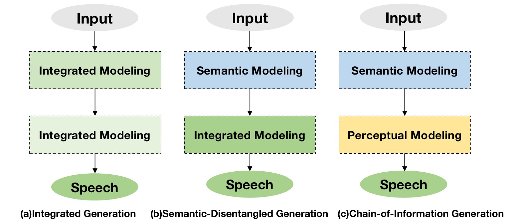
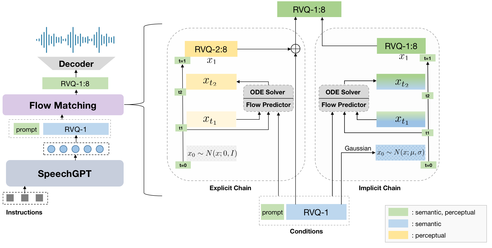

Benefiting from effective speech modeling, current Speech Large Language Models (SLLMs) have demonstrated exceptional capabilities in in-context speech generation and efficient generalization to unseen speakers.
However, the prevailing information modeling process is encumbered by certain redundancies, leading to inefficiencies in speech generation.
We propose Chain-of-Information Generation (CoIG), a method for decoupling semantic and perceptual information in large-scale speech generation. Building on this, we develop SpeechGPT-Gen, an 8-billion-parameter SLLM efficient in semantic and perceptual information modeling. It comprises an autoregressive model based on LLM for semantic information modeling and a non-autoregressive model employing flow matching for perceptual information modeling. Additionally, we introduce the novel approach of infusing semantic information into the prior distribution to enhance the efficiency of flow matching.
Extensive experimental results demonstrate that SpeechGPT-Gen markedly excels in zero-shot text-to-speech, zero-shot voice conversion, and speech-to-speech dialogue, underscoring CoIG's remarkable proficiency in capturing and modeling speech's semantic and perceptual dimensions.


Speech-to-Speech Dialogue:
SpeechGPT-Gen can respond to a speech instruction with speech response matching the timbre of a given speech prompt.
Instruction Speech
Prompt Speech
Response Speech
Zero-shot Voice Conversion:
Source Speech
Prompt Speech
Generated Speech
Zero-shot Text-to-Speech:
Text
Speaker Prompt
SpeechGPT-Gen
the phrase and the day and the scene harmonized in a chord.
the examination however resulted in no discovery.
consumption becomes a larger element in the standard of living in the city than in the country.
the army found the people in poverty and left them in comparative wealth.